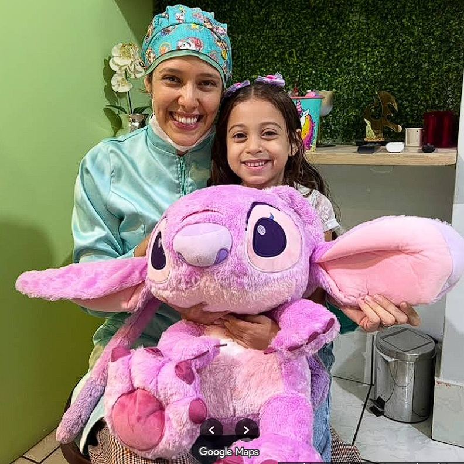
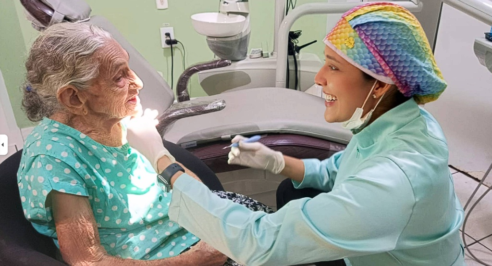

Atendimento humanizado para todas as idades, do lúdico ao especializado.
Agendar Agora
"A Dra. Nayara tem um dom! Minha filha perdeu o medo e amou o Stitch. Atendimento impecável."
Odontopediatria

"Muito carinho e paciência. Me senti segura durante todo o procedimento. Uma profissional rara."
Clínica Geral e Geriátrica
| Segunda a Sexta | 08:00 – 18:00 |
| Sábado | 08:00 – 12:00 |
📍 Rua do Consultório, 123 - Centro